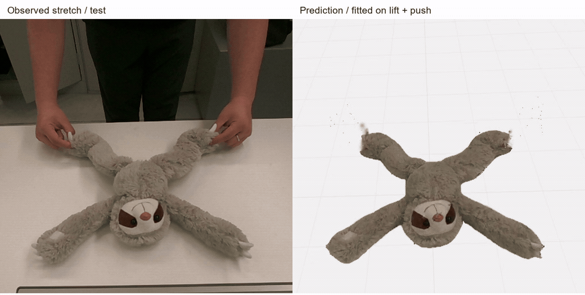
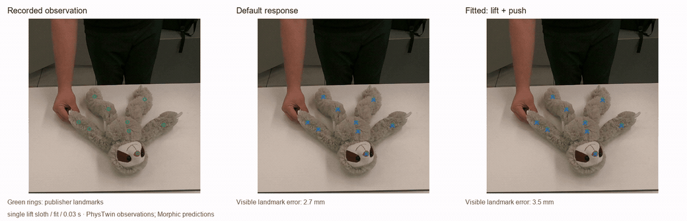
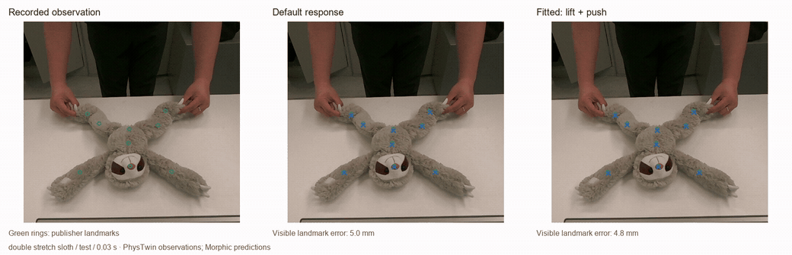
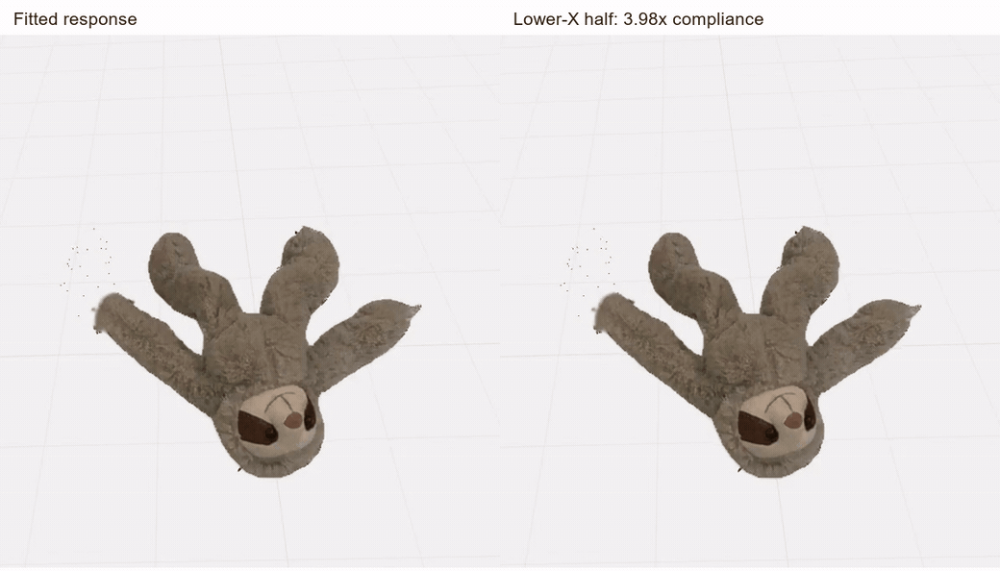
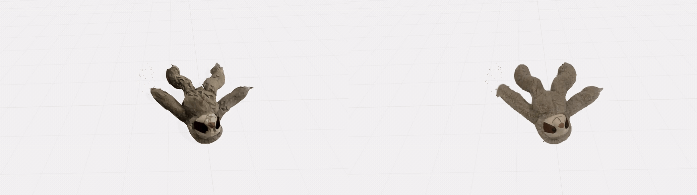
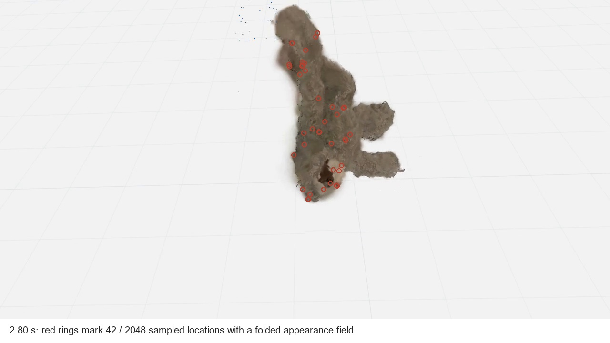

Morphic
How captured shape, observed motion and physical simulation come together in an object you can interact with.

A captured shape tells us where an object’s surface is. It does not tell us what happens when someone lifts an arm, pushes its head, or changes its material. The original Morphic studio could deform textured objects interactively. This project adds a harder requirement: the response must explain something observed.
The resulting system fits effective response parameters, preserves the loading and numerical settings, and exports an object that remains interactive. Its experiments also expose a boundary: better fitting does not reliably produce better prediction. The real-object fit improves the recordings used to estimate it; a new stretch action is predicted about as well by the default response. That distinction drives the design below.
I used a soft toy from the public PhysTwin dataset. The input includes metric 3D point tracks, hand trajectories, camera calibration, and an initial shape prior. Morphic receives the first-frame shape and the hand motion, then adjusts a few simulator parameters to reduce the error against observed object motion.
A lift alone leaves important behavior unconstrained. Its fitted response reduces the lift error from 39.46 to 24.45 mm, but makes a separate push worse: 69.03 to 79.65 mm. Fitting lift and push together produces a better compromise. The looping comparison makes that compromise visible.

After fitting lift and push, I used double lift for validation and reserved the entire stretch recording for testing. The selected model receives each trial’s initial geometry and hand loading. It receives no later object positions during simulation.
The result is mixed. On double lift, the default response is better. On the reserved stretch action, the fitted response reaches 27.78 mm filtered-track RMSE against 28.19 mm for the default. The independent landmark errors are effectively equal. The present evidence supports a working capture-and-test pipeline, not a claim of reliable improvement across interactions.

| Recording | Default | Joint fit | Two-region fit |
|---|
The default is an unfitted reference for this graph model, not one of the original studio’s artistic presets. These values are read from the frozen experiment report.
| Recording | Default | Joint fit | Two-region fit |
|---|
The publisher’s sparse landmarks were excluded from the fitting objective. Missing landmarks are masked, and the initial frame is excluded from scores. They remain processed RGB-D observations rather than force or motion-capture ground truth.
On stretch, a static object scores 43.82 mm and a fitted distance-weighted hand-motion warp scores 45.58 mm. The physical graph predicts the motion better than these simple alternatives. Fitting its parameters adds little over its default settings. A separate zebra lift pilot also fails to improve double-lift validation: 17.66 mm default versus 18.41 mm fitted. This is a small study, with one main object, one reserved action, and no population-level accuracy claim.
The appearance can contain hundreds of thousands of elements. The simulator uses 320 nodes. Neighboring nodes are linked by compliant distance constraints; a second set of constraints follows the observed hand points. Gravity and table contact complete the loading model.
Sample the initial geometry, construct local connections, and bind appearance and observation points to nearby nodes. Preserve metric scale.
Estimate object compliance, hand coupling, damping, and table friction from lift and push. Keep later test motion outside the optimizer.
Serialize the geometry, response, hand loading, timestep, and solver iterations. Run the same equations in the browser and record interventions.
This is an independent XPBD implementation informed by PhysTwin’s spring-based inverse problem. It preserves the original Morphic studio’s interaction, appearance binding, export, and replay workflow. Preparation runs in Python; the interactive solver runs in JavaScript. All four frozen Python and JavaScript trajectories agree with zero coordinate difference. The JavaScript solver takes about 2.4–3.7 ms per recorded frame in a Node.js CPU check; rendering and encoding are excluded. A more elaborate reduced backend is not yet justified by the physics cost alone.
Each edge uses a distance constraint
C = ‖xᵢ − xⱼ‖ − ℓ₀. XPBD updates its multiplier
with Δλ = (−C − αλ/Δt²) / (wᵢ + wⱼ + α/Δt²). The
same compliance, ordering, eight substeps per 30 fps frame, and
five solver iterations are used during fitting and deployment.
Coordinates are metres; gravity is 9.81 m/s² toward the table. Node masses are prescribed as one, the observed first frame is treated as rest, and hand trajectories prescribe motion rather than measured force. The fitted compliance is therefore an effective discrete response. It is not Young’s modulus, a measured density, or proof of internal composition.
There is no continuum-convergence claim, self-collision model, or calibrated force prediction. First-frame shape error, attachment error, and missing loading information can be absorbed into fitted parameters. Changing scale, topology, mass, timestep, or solver iterations invalidates the fit.
PhysTwin supplies the most direct starting point: fit simulated behavior to multi-view observations. I inspected its official implementation and retained its distinction between object motion observations and prescribed hand loading. Morphic uses a different integrator and graph, so these results are not a reproduction of PhysTwin’s reported accuracy.
Simplicits and FreeForm provide stronger routes to representation-independent reduced simulation. FreeForm’s material-aware particle skinning modes are not interchangeable with a generic graph basis. Their official sources were inspected, but neither backend was run here. A replacement would need its own fit and a measured fidelity/runtime comparison; there is no justified parameter transfer between these models.
PhysReal motivates a staged increase in material complexity. Here that becomes a bounded two-region ablation, not an implementation of its hybrid constitutive model. No official implementation link was found in the inspected project page. PhysGaussian informs appearance transport only; Morphic does not import its MPM simulator.
I first tested spatial fitting on a controlled block whose geometry, loading, and hidden response were known. Across three noise seeds, the heterogeneous fixture’s unseen-action error falls from 5.50 mm with the preset to 3.96 mm with one fitted compliance and 0.87 mm with two regions. The reference uses the same solver family, so this verifies identification under controlled conditions, not real material recovery.
The real toy does not offer the same evidence. Splitting its initial world-X extent into two regions barely changes the fitting residual and does not improve the stretch test. I kept the uniform fit as the main model. The region boundary is a documented modeling choice, not an inferred anatomical boundary.
Explore the synchronized synthetic experiment, noise tests, and failure cases.
The studio can replay the same loading after a local compliance change. It can also accept a new mouse interaction. These are useful design experiments, but they are hypothetical edits: no corresponding altered real toy was measured.

A plausible deformation can still lose the identity of a captured object. The supplied textured shape prior is visibly faceted. PhysTwin’s pretrained Gaussians retain finer fur and color detail, so I implemented a second appearance path and bound both representations to the same response graph.
The comparison below changes appearance, not physics. Gaussian centers follow the displacement field; their covariance follows its local derivative. This implementation keeps only constant spherical-harmonic color and the source’s isotropic covariance. It is a reduced appearance model, and its fidelity is demonstrated visually rather than certified by a novel-view benchmark.

A smooth-looking splat does not guarantee a well-behaved deformation map. At the last lift frame, 42 of 2,048 sampled appearance locations have a negative local Jacobian determinant: the displacement field folds there. The graph has no volume or self-collision constraint to prevent this. These are appearance-field diagnostics, not measurements of physical volume.

The analytic derivative agrees with finite differences to 7.6 × 10⁻¹⁰ in this CPU formula check. That validates the derivative calculation, not the physical plausibility of the map or the accuracy of GPU arithmetic. A richer appearance cannot repair an inadequate motion model.
Morphic now turns observed motion into a portable, editable response asset and tests it against a separate recording. The controlled experiment identifies a spatial response within its model family. The real experiment demonstrates fitting and interactive deployment, while exposing the limited benefit of that fit on new loading.
The next scientific improvement should address those residuals: better rest geometry and contact identification, measured loading where possible, and a model whose behavior remains stable under discretization changes. More material parameters or a different renderer would not resolve those questions by themselves.
The repository retains the raw-source manifest, exact fitting reports, frozen parameter vectors, unsuccessful pilots, and preparation scripts. Public source data are downloaded from a pinned dataset revision by ZIP member and checked with SHA-256.
npm ci npm test npm run build python -m venv work/research-venv # Activate the environment, then: pip install -r requirements-research.txt python scripts/fetch-phystwin.py --cases single_lift_sloth single_push_sloth double_lift_sloth double_stretch_sloth --video python scripts/fit-measured-joint.py --output work/reproduced-joint python scripts/verify-measured.py
CPU preparation and the browser runtime have different requirements. These earlier response experiments used no paid compute; the newer reconstruction pilot used a separately budgeted Runpod GPU. Example assets are available in the replacement capture studio. Archived measured responses remain accessible through the experiment embeds.
Source download · Measured report · Synthetic report · Fitted response asset
Morphic / Jaundel. Research engineering, implementation, and local experiments. The article reports both useful behavior and failed transfer. Source files, preprocessing assumptions, and licenses are retained with the project.